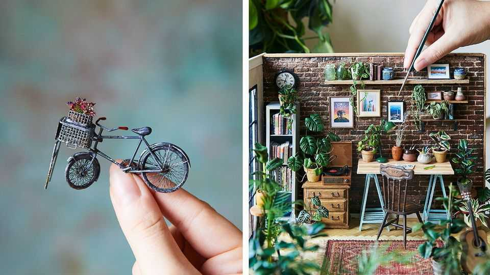

What’s behind the big interest in miniatures?
Nostalgia and a desire for control are fuelling a boom in small things

Oct 15th 2026
A charming Victorian home with four bedrooms and two bathrooms has just hit the market for only £1,150 ($1,500), plus shipping. Newly renovated by the previous owner, this “dream house” promises hardwood floors, marble accents and a “gorgeous wraparound front porch”. The one catch: it is just 54 inches wide by 42 inches tall. At least it has a low heating bill.
Miniatures are having a huge moment. Hobbyists are jumping on the model bandwagon as collectors, makers or both. Attendance at dolls’ house conventions is booming. Miniatures.com, one of America’s leading small-creation retailers, has seen more than a tripling of net sales over the past two years. The International Guild of Miniature Artisans—“miniature” referring to the size of the craft, not to the artisans themselves—saw “a record number” of new people attend their annual art course, according to Audrey Tripp, the director.
The resurgence of this whimsical pastime reflects growing enthusiasm for “grandma hobbies”, with people embracing hands-on, analogue activities. The tiny trend offers a “kind of escapism”, says Steve Putnam, a miniaturist and collector. Stuck at home during covid, many young people rediscovered their childhood dolls’ houses, or needed a hobby that did not take up much space. Miniatures provide the freedom to “create anything because it’s so small”, says Mr Putnam.
The ability to control a world appeals during times of instability, too: hence the construction boom in dolls’ houses. “I can’t afford to have this massive dream home, but I’m going to make it from scratch,” says Hannah Lemon, the winner of the second season of “Best in Miniature”, a Canadian reality TV series.
Designing miniatures is no small feat. A recent exhibition at the Museum of the City of New York displayed a replica of the city made from balsa wood, cardboard and glue, which stretched 50 by 27 feet. It took Joe Macken, the artist, 21 years to craft it by hand. Elisabeth Sherman, the curator, says that with the rise of technology “we have a real human desire for things that we can touch, things that we can make ourselves.” The intricate craft forces creators and viewers to slow down.
The final reason for this uptick is technology itself. The rise of 3D printing and laser-cutting has enticed new artisans to the field. Though traditionalists sometimes gripe about these tools, claiming they cut corners (literally) and do not produce high-quality work, most think they have helped craftsmen’s speed and productivity. They have also lowered prices, bringing more people into the thrall of collecting. It’s a small world, after all. ■